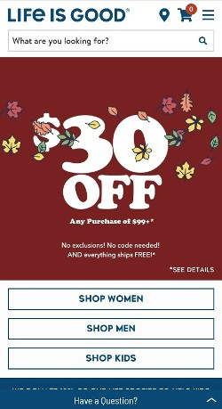

Visual Hierarchy
Life is Good The Life is Good website is an excellent example of visual hierarchy, which is the display of the most important items on a website via visual display. Below a simple navigation menu, the site displays its contents by importance through order and size. The most important items come first and have the biggest elements to display them on the site. The lesser items come later on towards the bottom of the page and are smaller in element size.
White Space and Clean Design
Verizon.jpg)
The website for Verizon is a great example of using white space and clean design. Having white space, or just space, makes a website look clean and contiues to hold the user's attention as to not bore or drive them away. Verizon's website has space between all of it's elements while using mostly pictures and few words. This catches and keeps the attention of users as the company is showing users what it has to offer instead of telling users what it has to offer.
PARC: Contrast
ArmyWhen it comes to contrast, The Army's website is a great example. Contrast is the difference between elements on a website, from colors to text. The contrast between colors on the website draws the user in, persuading them to learn more about the content of the website.